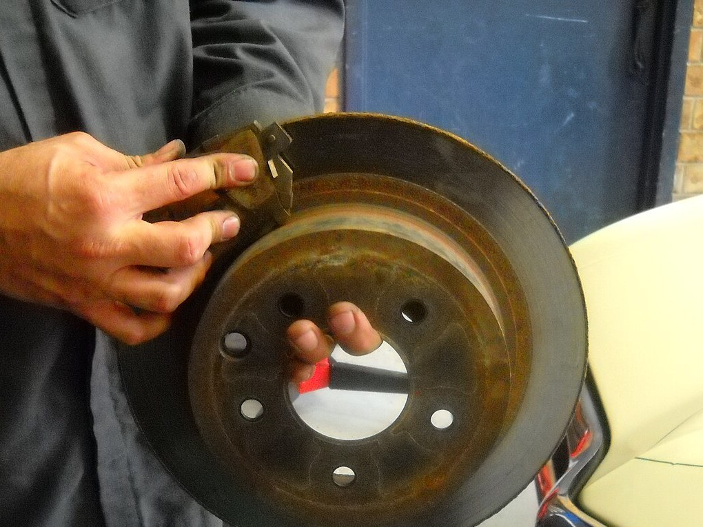

A Complete Guide to Exploring Spare Parts Vendors

Finding the right spare part is rarely about a single shop. It is about knowing how a market is organised, which shops specialise in what, and how to narrow hundreds of possibilities down to the two or three vendors most likely to have your part. A spare-parts market rewards preparation: the buyer who arrives with the vehicle details, the old part or a clear photograph of it, and a short list of shops to try will usually finish faster — and with the correct part — than the buyer who starts by walking the market at random.
This guide walks through the whole process: how to explore spare-parts shops, how to read vendor specializations, how to use a vendor directory properly, what to check before you contact a shop, and why having many vendors listed in one place changes the search for the better.
How to explore spare-parts shops
Start before you leave home. Write down the vehicle first: make, model, year and engine type. Then write down the part: its name, where it sits in the vehicle, and the symptoms that made you look for it. If you have a part number — from the old part, a manual, or a previous receipt — write that down too. A part number removes most of the guesswork, because many parts look alike across models but only one fits yours.
Take the old part with you if you can remove it safely, or take clear photographs of it from several angles, including any numbers stamped or printed on it. Shopkeepers identify parts by sight and by number far more reliably than by a spoken description, and a photograph sent over WhatsApp before a visit can confirm in a minute whether a trip is worth making.
When you reach the market, work in order rather than at random. Markets tend to cluster by trade: one lane may be known for a particular vehicle brand, another for wholesale, another for batteries or body parts. Ask the first shopkeeper you meet where the specialists for your part are — in a market, that question is normal, and a shop that does not stock your part will usually point you to one that does. Note the shop names, lanes and phone numbers as you go, so a second visit does not mean starting over.
Look at what a shop actually stocks before you ask. Shelves full of one brand or one system — brake parts, filters, batteries — tell you what that shop does every day. A shop that stocks your vehicle's brand, or the system your part belongs to, is more likely to have the part, to know its alternatives, and to recognise a wrong fitment before it is sold. That is the difference between a specialist and a general stockist, and it matters most for parts that are model-specific or safety-critical.
Understanding vendor specializations
Shops specialise in several different ways, and recognising the type of specialization helps you choose where to start.
By vehicle brand
Many shops focus on one or two vehicle brands — Suzuki, Honda, Toyota, Hyundai, or a tractor or commercial-vehicle brand. Brand specialists usually carry the common parts for those vehicles, know the differences between model years, and can tell you when a part from one model fits another. If your vehicle is a common model, a brand specialist is usually the fastest first stop.
By system or component
Other shops specialise by system: brakes, suspension, electrical parts, cooling, transmission, or body parts. A brake specialist will carry pads, discs, shoes and calipers across many brands; a battery shop will carry batteries, terminals and testing. System specialists are the right first stop when the problem is in one system and the vehicle brand matters less — for example, a battery, a filter, or a brake pad.
By wholesale or retail
Some shops sell wholesale, some retail, and some do both. Wholesalers supply other shops in bulk and may not sell single parts to a walk-in customer, or may only do so at a wholesale quantity. Retailers sell to vehicle owners and workshops, often with fitting. A directory that records business type saves a wasted visit: check whether a shop is listed as a retailer, a wholesaler, or both before you go.
General stockists
General stockists carry a wide range of parts across brands and systems. They are useful when you need several different parts at once, or when you are not sure which system the fault is in. Their breadth is their strength; their depth in any one line is usually less than a specialist's. Start with a specialist for a single specific part, and with a general stockist when the job needs a little of everything.
None of these types is better in general — each is better for a particular job. The skill is matching the shop to the part: brand specialist for a model-specific part, system specialist for a system part, retailer for a single part with fitting, wholesaler when you are buying for a workshop in quantity.
How to use a vendor directory
A vendor directory is a tool for narrowing the search before you spend time travelling. Used well, it turns a market of hundreds of shops into a short list. Used badly — a single search, one phone call, no notes — it is barely better than walking in blind.
Begin with a search, not a scroll. Search by the shop name if you already know it, or by the part you need: the directory on this website searches shop names and main parts together, so “brake pads” or “radiator” will surface the shops that list them. Then filter. Category narrows the list to a shop's primary category; specialization narrows it to every category a shop's parts match, so a shop that lists both engine parts and filters appears under both. City matters because spare parts are heavy and often needed urgently — filter to the city you can actually reach today.
Read the whole card, not just the name. The address tells you which market area the shop is in; the business type tells you whether it sells retail; the main-parts line tells you what it stocks; the phone number tells you whether you can confirm stock before travelling. Open “View Details” for the shops that look promising and compare them side by side: two shops in the same lane may stock different brands, and the one that lists your vehicle's brand is the better first call.
Make a short list of two or three shops, not one. The first shop may be out of stock, closed, or unable to match your part number. A short list means the second call takes seconds instead of starting the search again. Keep the list — shop name, phone number and what each one said — so the next time the same part is needed, the search starts from notes instead of from zero.
Finally, remember what a directory is and is not. It lists shops as supplied: names, addresses, main parts and contact details. It does not sell parts, hold stock, or guarantee that a part is on the shelf today. The directory narrows the search; the phone call confirms it.
Information to check before contacting a shop
A short check before you call or visit saves time for both sides and reduces the chance of buying the wrong part. Work through it in order.
- Vehicle details. Make, model, year and engine type. Two vehicles with the same model name can take different parts in different years.
- The exact part. Its name, its position in the vehicle, and the part number if you have one. Bring the old part or clear photographs of it, including stamped numbers.
- Genuine or compatible. Decide what you are asking for, and ask the shop plainly which one it is offering. A genuine part is made by or for the vehicle manufacturer; a compatible part is made by an independent manufacturer to fit. Neither is automatically right — but you should know which one you are buying.
- Stock and fitment. Confirm the part is in stock before travelling, and confirm it fits your exact model and year — not just a similar one.
- Fitting. Ask whether the shop fits the part, or whether you need a workshop. Some parts need tools or knowledge that make fitting part of the purchase, not an afterthought.
- Receipt and warranty. Ask what paperwork comes with the part and keep it. A receipt and any warranty paperwork are what you rely on if the part fails early.
- Safety-critical parts. For brakes, steering and suspension, have the vehicle inspected by a qualified person rather than guessing at the fault. Buying the part is the easy half of the job; fitting it correctly is the other half.
One more check is worth making: the contact details themselves. If a listing shows no phone number, the shop can still be visited at its address — but you cannot confirm stock in advance, so allow extra time and have a second shop on your list. If a WhatsApp number is shown, a photograph of the old part sent before the visit is often the fastest confirmation of all.
Benefits of having multiple vendors in one place
A directory with many vendors changes the search in several practical ways.
First, it creates alternatives. A part that one shop is out of may be on the shelf two lanes away, and a directory shows you that second shop before you have walked anywhere. For older vehicles, where parts are scarce, alternatives matter even more: the shop that specialises in used or reconditioned parts may be the only one that has what you need.
Second, it makes comparison possible. With shops listed in one format, you can compare main parts, business type and location without visiting each one. That comparison is what lets you choose a brand specialist over a general stockist for a model-specific part, or a retailer over a wholesaler when you need a single part fitted.
Third, it gives small shops visibility. A shop that has served its own neighbourhood for years becomes findable by customers from another city, by a workshop opening in a new area, or by a vehicle owner who has just moved. The directory does not replace the market's personal knowledge — it carries that knowledge further than word of mouth can.
Fourth, it helps new buyers. A first-time vehicle owner, a visitor from another city, or someone buying a part they have never bought before starts with nothing. A directory gives them a starting point: a search box, a category, a city, a phone number. That is a smaller, less intimidating first step than walking into a busy market with no plan.
Finally, it saves the market's time as well as the buyer's. Shops get calls from buyers who already know what they need and have already checked that the shop stocks it, instead of calls from buyers who are still guessing. A prepared buyer and a visible vendor make a faster transaction on both sides.
A practical visit, step by step
Put the guide together and a typical visit looks like this. A brake pad needs replacing. You note the vehicle — make, model, year — and photograph the old pad, including any number stamped on its backing. You search the directory for “brake pads”, filter to your city, and open the details of two or three shops whose main parts list brake components and whose business type is retail. You call the first, confirm the pad is in stock for your model, ask whether it is genuine or compatible, and ask about fitting. If it is in stock, you go; if not, you call the second shop on your list. At the shop, you compare the new pad with the old one before it is fitted, keep the receipt, and note the shop's name and number for next time.
Nothing in that visit required special knowledge — only preparation, a short list, and a phone call. That is the whole point of exploring vendors properly: the market is large, but the search does not have to be.
Closing
Exploring spare-parts vendors is a skill, and like most skills it is mostly method: know the vehicle, know the part, understand what each kind of shop does best, use the directory to build a short list, and check the important details before you travel. The market will still surprise you — a part will be out of stock, a model year will differ, a specialist will point you somewhere unexpected — but a prepared search absorbs those surprises instead of being stopped by them. Browse the vendor directory, explore the spare-parts catalog to learn the categories, and keep your notes: the short list you build today is the starting point for the next part you need.